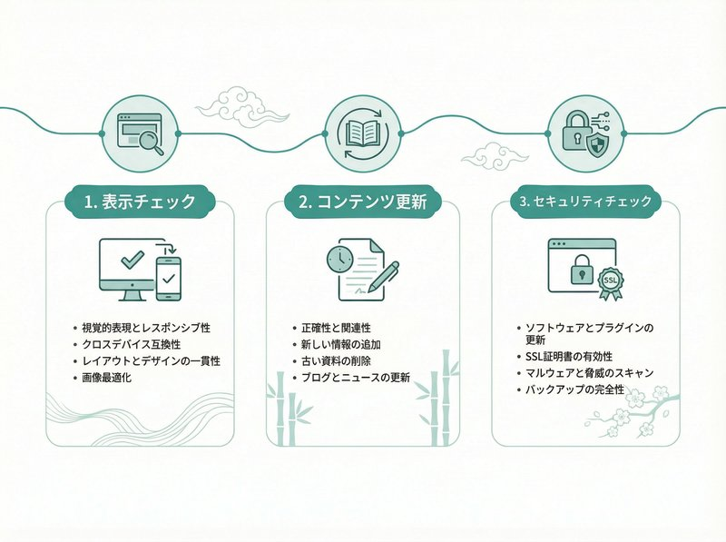

ホームページは「作って終わり」ではありません。車に車検があるように、ホームページにも定期的な点検が必要です。
しかし、「具体的に何をチェックすればいいのかわからない」という方も多いのではないでしょうか？
放置していると、いつの間にかお問い合わせフォームが動かなくなっていたり、表示が崩れてお客様を逃していたりする可能性があります。
今回は、Webの専門知識がなくても自分でできる「5つのチェックポイント」と、プロに任せるべき項目について、埼玉県戸田市のWeb制作会社ミアキスが解説します。
なぜ定期点検が必要なのか？
ホームページは一度公開すれば永遠にそのまま動くわけではありません。ブラウザ（ChromeやSafari）のアップデート、スマホの画面サイズの変化、サーバーの仕様変更など、外部環境は常に変化しています。
定期的に点検を行うことで、トラブルを未然に防ぎ、機会損失を最小限に抑えることができます。
自分でできる！5つの簡単チェックリスト
まずは、専門知識がなくても今すぐできるチェック項目をご紹介します。月に1回は確認することをおすすめします。
1. お問い合わせフォームの送受信テスト
最も重要なのがフォームの確認です。「問い合わせが来ないな」と思っていたら、実はフォームがエラーで動いていなかったというケースは意外と多いです。
- 実際に自分のフォームからテスト送信してみる
- 自動返信メールが届くか確認する
- 管理者（自分）に通知メールが届くか確認する
2. スマホでの表示確認
PCで作業していると、スマホでの表示確認を忘れがちです。しかし、今や閲覧者の7割以上はスマホからです。
- iPhoneとAndroidの実機で確認する
- 文字が小さすぎないか、ボタンが押しにくくないか
- 画像が画面からはみ出していないか
3. 最新情報の更新日付
「新着情報」の最終更新日が数年前になっていませんか？
動いていないサイトだと思われると、信頼性が下がり、問い合わせを躊躇されてしまいます。
- お知らせやブログが長期間止まっていないか
- Copyright（フッターの年号）が古いままになっていないか
4. リンク切れのチェック
外部サイトへのリンクや、サイト内の別ページへのリンクが切れていないか確認しましょう。
クリックして「404 Not Found」ページが表示されると、ユーザビリティが悪化し、Googleからの評価も下がります。
5. 会社情報の確認
住所、電話番号、営業時間などに変更はありませんか？
特に年末年始やゴールデンウィークの休業案内などが、明けた後もそのまま残っていることがよくあります。
プロに任せるべき技術的な点検項目
ここまでは目に見える部分の点検でしたが、ホームページには「裏側の点検」も必要です。
これらは専門知識が必要になるため、制作会社や保守パートナーに任せることを推奨します。
セキュリティ状態の確認
WordPress本体やプラグインのバージョンが古くないか、不正なアクセスや改ざんの形跡がないかをチェックします。
定期バックアップの取得確認
万が一トラブルが起きた時に復旧できるよう、定期的にバックアップが取れているか、そのデータが正常かをシステムのログで確認します。
表示速度の計測と改善
画像の容量増加などでサイトが重くなっていませんか？GoogleのPageSpeed Insightsなどで計測し、必要であれば画像の再圧縮やコードの最適化を行います。
安心して本業に集中するために
ホームページの点検は、自分たちでやるに越したことはありませんが、毎月チェックするのは手間がかかるものです。
また、目に見えないセキュリティリスクなどは、プロでないと気づけないこともあります。
株式会社ミアキスでは、月額保守プランの中でこれらの定期点検を代行しています。
「もし何かあったらどうしよう」という不安を解消し、お客様には本業に集中していただくためのサポート体制を整えています。
ホームページの保守・点検にお悩みですか？
「自社のサイトが大丈夫か診断してほしい」「保守だけ依頼したい」というご相談も承っています。
埼玉県戸田市を中心に、親身なサポートで貴社のWeb活用を支えます。
まとめ
ホームページは作って終わりではなく、育てていくものです。
まずは今日ご紹介した「自分でできる5つのチェック」から始めてみてください。
もし「フォームが動かない」「表示がおかしい」といった不具合が見つかった場合や、定期的な管理をプロに任せたい場合は、お気軽にミアキスまでご相談ください。